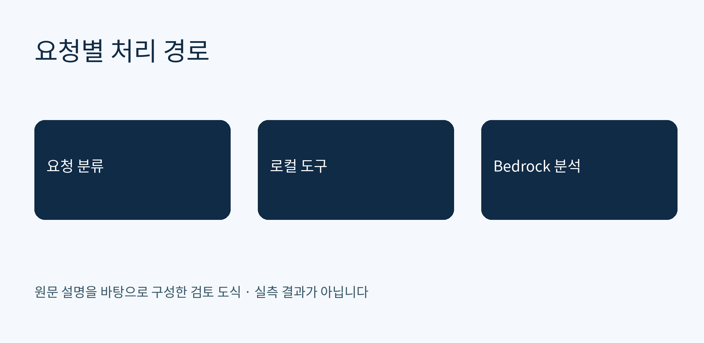
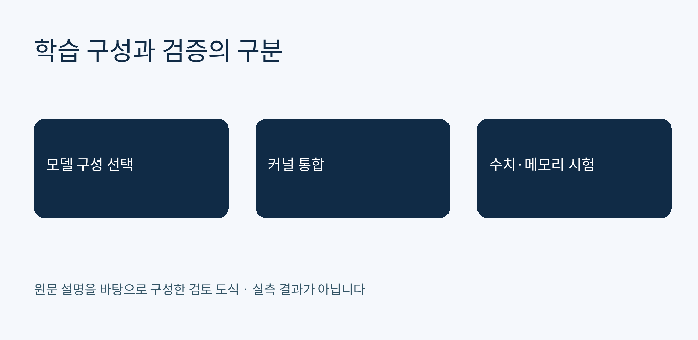
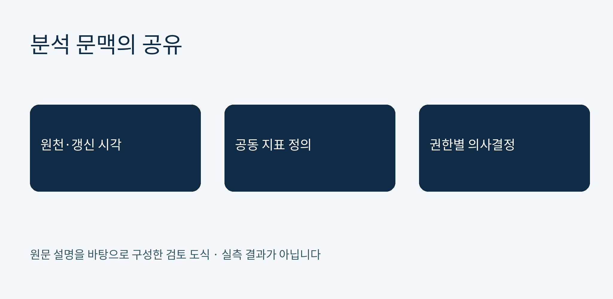

에이전트·하이브리드 추론
Strands Agents로 로컬 처리와 Bedrock 호출을 나누는 적응형 에이전트를 구성합니다
원문은 Ollama의 llama3.2:1b를 라우터로 두고 텔레메트리·영상 분석은 로컬 도구, 복잡한 질문은 Amazon Bedrock으로 보내는 AAIF 예제를 설명합니다. 텔레메트리는 모의 데이터이며 MCP 분산 구성은 확장 방향으로 제시됩니다.
AWS 머신러닝 블로그 원문 읽기발행: 2026-10-22T06:23:26+09:00
모델 학습·가속기
torchtitan에서 Qwen3 학습과 NKI 커널 교체를 같은 실행 흐름으로 다룹니다
원문은 단일 trn2.48xlarge에서 Transformers v5 기반 모델, torchtitan 기본 Qwen3, NKI MoE 커널의 세 구성을 설명합니다. 사용자 커널 예제는 등록과 역전파 통합을 보여 주며 성능 개선을 입증하는 예제는 아니라고 명시합니다.
AWS 머신러닝 블로그 원문 읽기발행: 2026-10-22T05:00:22+09:00
데이터 분석·경영 의사결정
U.S. Hunger는 Amazon Quick에서 공동 지표 정의와 경영 문맥을 연결합니다
원문은 SQL Server 데이터를 매일 오전 2시 미국 동부시간에 SPICE로 갱신하고 Quick Spaces에서 KPI 정의·재무 문서·분석을 공유한다고 설명합니다. Boomi와 Amazon Redshift를 통한 기업 지표 확장은 향후 계획으로 구분합니다.
AWS 머신러닝 블로그 원문 읽기발행: 2026-10-22T04:19:50+09:00
시사점/인사이트 리포트
다음 내용은 원문 설명과 본 분석을 구분합니다. 제안한 시험은 이번 실행에서 수행하지 않았습니다.
Strands Agents로 로컬 처리와 Bedrock 호출을 나누는 적응형 에이전트를 구성합니다
관찰된 원문 내용: 원문은 Ollama의 llama3.2:1b를 라우터로 두고 텔레메트리·영상 분석은 로컬 도구, 복잡한 질문은 Amazon Bedrock으로 보내는 AAIF 예제를 설명합니다. 텔레메트리는 모의 데이터이며 MCP 분산 구성은 확장 방향으로 제시됩니다.
근거 출처: https://aws.amazon.com/blogs/machine-learning/adaptive-agentic-intelligence-framework-using-strands-agents/
분석·인사이트·기업 검토 후보: 라우팅 오판과 외부 전송 데이터 범위를 함께 시험하는 것이 검토 후보입니다. 원문의 약 80% 로컬 처리 설명을 자사 절감률로 가정하지 않아야 합니다. 로컬 계층에서 ApplyGuardrail API를 호출하는 선택은 완전 단절 환경 요구와 분리해서 검토해야 합니다.

torchtitan에서 Qwen3 학습과 NKI 커널 교체를 같은 실행 흐름으로 다룹니다
관찰된 원문 내용: 원문은 단일 trn2.48xlarge에서 Transformers v5 기반 모델, torchtitan 기본 Qwen3, NKI MoE 커널의 세 구성을 설명합니다. 사용자 커널 예제는 등록과 역전파 통합을 보여 주며 성능 개선을 입증하는 예제는 아니라고 명시합니다.
근거 출처: https://aws.amazon.com/blogs/machine-learning/train-qwen3-on-aws-trainium-with-torchtitan/
분석·인사이트·기업 검토 후보: 학습 코드 이식 가능성과 처리량 우위는 다른 판단입니다. 버전 고정, 체크포인트 재개, 수치 일치, 메모리 사용을 재현하는 시험이 검토 후보입니다. 축소 MoE 구성 결과를 원래 전체 모델의 학습 가능성으로 일반화하지 않아야 합니다.

U.S. Hunger는 Amazon Quick에서 공동 지표 정의와 경영 문맥을 연결합니다
관찰된 원문 내용: 원문은 SQL Server 데이터를 매일 오전 2시 미국 동부시간에 SPICE로 갱신하고 Quick Spaces에서 KPI 정의·재무 문서·분석을 공유한다고 설명합니다. Boomi와 Amazon Redshift를 통한 기업 지표 확장은 향후 계획으로 구분합니다.
근거 출처: https://aws.amazon.com/blogs/machine-learning/how-u-s-hunger-connects-leaders-and-data-using-amazon-quick/
분석·인사이트·기업 검토 후보: 대화형 분석을 도입할 때 데이터 갱신 시각과 공유 지표 정의를 함께 노출하는 구성이 검토 후보입니다. 한국 기업의 재무·민감 데이터 분석에서도 접근 권한과 모집단 정의를 검토해야 하며, 원문의 성장 수치를 Quick의 인과 효과로 해석하지 않아야 합니다.
